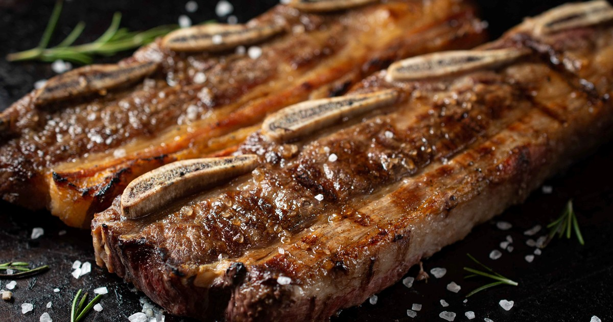

recetas
Asado

Descripción
El asado es la comida más emblemática de la cultura rioplatense, representando un ritual de encuentro entre amigos y familia.
Consiste en diversos cortes de carne vacuna cocidos lentamente sobre las brasas de carbón o leña, resaltando el sabor natural de la carne.
Ingredientes
- 2 kg de tira de asado.
- 1 kg de vacío.
- 4 chorizos y 2 morcillas.
- Sal parrillera (sal gruesa).
- Carbón o leña.
Pasos
- Encender el fuego y esperar a que el carbón se convierta en brasas.
- Limpiar la parrilla con papel de diario una vez que esté caliente.
- Salar la carne generosamente con sal parrillera por ambos lados.
- Colocar la carne en la parrilla (siempre el lado del hueso hacia abajo primero).
- Cocinar a fuego moderado durante 45-60 minutos antes de dar vuelta las piezas.
- Agregar los chorizos y morcillas a mitad de la cocción.
- Retirar y dejar reposar 5 minutos antes de cortar.